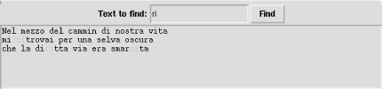

16.6 The Text Widget
Class Text implements
a powerful multiline text editor, able to display images and embedded
widgets as well as text in one or more fonts and colors. An instance
t of Text supports many
ways to refer to specific points in
t's contents.
t supplies methods and configuration
options allowing fine-grained control of operations, content, and
rendering. This section covers a large, frequently used subset of
this vast functionality. In some very simple cases, you can get by
with just three Text-specific
idioms:
t.delete('1.0', END) # clear the widget's contents
t.insert(END, astring) # append astring to the widget's contents
somestring = t.get('1.0', END) # get the widget's contents as a string
END is an index on any Text
instance t, indicating the end of
t's text.
'1.0' is also an index, indicating the start of
t's text (first line,
first column). For more about indices, see Section 16.6.5 later in this chapter.
16.6.1 Text Widget Methods
An instance t of class
Text supplies many methods. Methods dealing with
marks and tags are covered in later sections. Many methods accept one
or two indices into t's
contents. The most frequently used methods are the following.
t.delete(i)
removes t's character at
index i.
t.delete(i,j)
removes all characters from index i to
index j, included.
t.get(i)
returns t's character at
index i.
t.get(i,j)
returns a string made up of all characters from index
i to index j,
included.
t.image_create(i,**window_options)
|
|
Inserts an embedded image in
t's contents at index
i. Call image_create
with option image=e,
where e is a Tkinter
image object, as covered in Section 16.2.4 earlier in this chapter.
Inserts string s in
t's contents at index
i. tags, if
supplied, is a sequence of strings to attach as tags to the new text,
as covered in Section 16.6.4 later in this
chapter.
t.search(pattern,i,**search_options)
|
|
Finds the first occurrence of string
pattern in
t's contents not earlier
than index i and returns a string that is
the index of the occurrence, or an empty string ''
if not found. Option nocase=True makes the search
case-insensitive; by default, or with an explicit option
nocase=False, the search is case-sensitive. Option
stop=j makes the search
stop at index j; by default, the search
wraps around to the start of
t's contents. When you
need to avoid wrapping, you can use stop=END.
Scrolls t, if needed, to make sure the
contents at index i are visible. If the
contents at index i are already visible,
see does nothing.
t.window_create(i,**window_options)
|
|
Inserts an embedded widget in
t's contents at index
i. t must be
the parent of the widget w that you are
inserting. Call window_create either with option
window=w to insert an
already existing widget w, or with option
create=callable. If you
use option create, Tkinter
calls callable without arguments the first
time the embedded widget needs to be displayed, and
callable must create a widget
w (with t as
w's parent) and return
w as
callable's result. Option
create lets you arrange creation of embedded
widgets just in time and only if needed, and is useful as an
optimization when you have many embedded widgets in a very long text.
t.xview([...])
t.yview([...])
|
|
xview
and
yview handle scrolling in horizontal and vertical
directions respectively, and accept several different patterns of
arguments. t.xview( ),
without arguments, returns a tuple of two floats between
0.0 and 1.0 indicating the
fraction of t's contents
corresponding to the first (leftmost) and last (rightmost) currently
visible columns.
t.xview(MOVETO,frac)
scrolls t left or right so that the first
(leftmost) visible column becomes the one corresponding to fraction
frac of
t's contents, between
0.0 and 1.0.
yview supports the same patterns of arguments, but
uses lines rather than columns, and scrolls up and down rather than
left and right. yview supports one more pattern of
arguments:
t.yview(i),
for any index i, scrolls
t up or down so that the first (topmost)
visible line becomes the one of index i.
16.6.2 Giving Text a Scrollbar
You'll often want
to couple a Scrollbar instance to a
Text instance in order to let the user scroll
through the text. The following example shows how to use a
Scrollbar s to control
vertical scrolling of a Text instance
T:
import Tkinter
root = Tkinter.Tk( )
s = Tkinter.Scrollbar(root)
T = Tkinter.Text(root)
T.focus_set( )
s.pack(side=Tkinter.RIGHT, fill=Tkinter.Y)
T.pack(side=Tkinter.LEFT, fill=Tkinter.Y)
s.config(command=T.yview)
T.config(yscrollcommand=s.set)
for i in range(40): T.insert(Tkinter.END, "This is line %d\n" % i)
Tkinter.mainloop( )
16.6.3 Marks
A mark on a
Text instance t is a
symbolic name indicating a point within the contents of
t. INSERT and
CURRENT are predefined marks on any
Text instance t, with
special predefined meanings. INSERT names the
point where the insertion
cursor (also known as the text caret) is located
in t. By default, when the user enters
text at the keyboard with the focus on t,
t inserts the text at index
INSERT. CURRENT names the point
in t that was closest to the mouse cursor
when the user last moved the mouse within
t. By default, when the user clicks the
mouse on t, t
gets focus and sets INSERT to
CURRENT.
To create other marks on t, call method
t.mark_set. Each mark
is an arbitrary string containing no whitespace. To avoid any
confusion with other forms of index, use no punctuation in a mark. A
mark is an index, as covered in
Section 16.6.5 later in this chapter;
you can pass a string that is a mark on t
wherever a method of t accepts an index
argument.
When you insert or delete text before a mark
m, m moves
accordingly. Deleting a portion of text that surrounds
m does not remove
m. To remove a mark on
t, call method
t.mark_unset. What
happens when you insert text at a mark m
depends on m's gravity
setting, which can be RIGHT (the default) or
LEFT. When m has
gravity RIGHT, m moves
to remain at the end (i.e., to the right) of text inserted at
m. When m has
gravity LEFT, m does
not move when you insert text at m: text
inserted at m goes after
m, and m itself
remains at the start (i.e., to the left) of such inserted text.
A Text instance t
supplies the following methods related to marks on
t.
t.mark_gravity(mark[,gravity])
|
|
mark is a mark on
t.
t.mark_gravity(mark)
returns mark's gravity
setting, RIGHT or LEFT.
t.mark_gravity(mark,gravity)
sets mark's gravity to
gravity, which must be
RIGHT or LEFT.
If mark was not yet a mark on
t, mark_set creates
mark at index
i. If mark was
already a mark on t,
mark_set moves mark to
index i.
mark is a user-defined mark on
t (not one of the predefined marks
INSERT or CURRENT).
mark_unset removes mark
from among the marks on t.
16.6.4 Tags
A tag on a
Text instance t is a
symbolic name indicating zero or more regions (ranges) in the
contents of a Text instance
t. SEL is a predefined
tag on any Text instance
t, and names a single range of
t that is selected, normally by the user
dragging over it with the mouse. Tkinter typically
displays the SEL range with distinctive background
and foreground colors. To create other tags on
t, call the
t.tag_add or
t.tag_config method, or
use optional parameter tags of method
t.insert. Ranges of
various tags on t may overlap.
t renders text having several tags by
using options from the uppermost tag, according to calls to methods
t.tag_raise or
t.tag_lower. By
default, a tag created more recently is above one created earlier.
Each tag is an arbitrary string containing no whitespace. Each tag
has two indices, first (start of the
tag's first range) and last (end
of the tag's last range). You can pass a
tag's index wherever a method of
t accepts an index argument.
SEL_FIRST and SEL_LAST indicate
the first and last indices of
predefined tag SEL.
A Text instance t
supplies the following methods related to tags on
t.
t.tag_add(tag,i)
adds tag tag to the single character at
index i in t.
t.tag_add(tag,i,j)
adds tag tag to characters from index
i to index j.
t.tag_bind(tag,event_name,callable[,'+'])
|
|
t.tag_bind(tag,event_name,callable)
sets callable as the callback object for
event_name on
tag's ranges.
t.tag_bind(tag,event_name,callable,'+')
adds callable to the previous bindings.
Events, callbacks, and bindings are covered in
Section 16.9
later in this chapter.
t.tag_cget(tag,tag_option)
|
|
Returns the value currently associated with option
tag_option for tag
tag. For example,
t.tag_cget(SEL,'background')
returns the color that t is using as the
background of t's
selected range.
t.tag_config(tag,**tag_options)
|
|
Sets or changes tag options associated with tag
tag, determining the way
t renders text in
tag's region. The most
frequently used tag options are:
- background, foreground
-
Background and foreground colors
- bgstipple, fgstipple
-
Background and foreground stipples, typically
'gray12', 'gray25',
'gray50', or 'gray75'; by
default, solid colors (no stippling)
- borderwidth
-
Width in pixels of the text border; default is 0
(no border)
- font
-
Font used for text in the tag's ranges (see
Section 16.6.6
later in this chapter)
- justify
-
Text justification, LEFT (default),
CENTER, or RIGHT
- lmargin1, lmargin2, rmargin
-
Left margin (first line, other lines) and right margin (all lines),
in pixels; default is 0 (no margin)
- offset
-
Offset from baseline in pixels (greater than 0 for
superscript, less than 0 for subscript); default
is 0 (no offset, i.e., text aligned with the
baseline)
- overstrike
-
If true, draw a line right over the text
- relief
-
Text relief: FLAT (default),
SUNKEN, RAISED,
GROOVE, or RIDGE
- spacing1, spacing2, spacing3
-
Extra spacing in pixels (before first line, between lines, after last
line); default is 0 (no extra spacing)
- underline
-
If true, draw a line under the text
- wrap
-
Wrapping mode: WORD (default),
CHAR, or NONE
For example:
t.tag_config(SEL,background='black',foreground='yellow') tells t to display
t's selected range with
yellow text on a black background.
Forgets all information associated with tag
tag on t.
Gives tag's options
minimum priority for ranges overlapping with other tags.
Returns a sequence of strings whose items are all the tags that
include index i. Called without arguments,
returns a sequence of strings whose items are all the tags that
currently exist on t.
Gives tag's options
maximum priority for ranges overlapping with other tags.
Returns a sequence with an even number of strings (zero if
tag is not a tag on
t or has no ranges), alternating start and
stop indices of tag's
ranges.
t.tag_remove(tag,i)
removes tag tag from the single character
at index i in
t.
t.tag_remove(tag,i,j)
removes tag tag from characters from index
i to index j.
Removing a tag from characters that do not have that tag is not an
error; it's an innocuous no-operation.
t.tag_unbind(tag,event)
removes any binding for event on
tag's ranges. Events and
bindings are covered in Section 16.9 later in this chapter.
16.6.5 Indices
All
ways to indicate a spot in the contents of a Text
instance t are known as
indices on t. The
basic form of an index is a string of the form
'%d.%d'%(L,C),
indicating the spot in the text that is at line
L (the first line is
1), column C (the first
column is 0). For example,
'1.0' is a basic-form index indicating the start
of text for any t.
t.index(i)
returns the basic-form equivalent to an index
i of any form.
END is an index indicating the end of text for any
t.
'%d.end'%L, for any
line number L, is an index indicating the
end (the '\n' end-of-line marker) of line
L. For example, '1.end'
indicates the end of the first line. To get the number of characters
in line number L of a
Text instance t, you
can use:
def line_length(t, L):
return int(t.index('%d.end'%L).split('.')[-1])
'@%d,%d'%(x,y)
is also an index on t, where
x and y are
coordinates in pixels within
t's window.
Any tag on t is associated with two
indices, strings
'%s.first'%tag (the
start of tag's first
range) and
'%s.last'%tag (the end
of tag's last range). For
example, right after
t.tag_add('mytag',i,j),
'mytag.first' indicates the same spot in
t as index i,
and 'mytag.last' indicates the same spot in
t as index j.
Trying to use an index such as 'x.first' or
'x.last' when no characters in
t are tagged with 'x'
raises an exception.
SEL_FIRST and SEL_LAST are
indices (the start and end of the selection, the
SEL tag). Trying to use
SEL_FIRST or SEL_LAST when
there is no selected range on t, however,
raises an exception.
Marks (covered earlier), including predefined marks
INSERT and CURRENT, are also
indices. Moreover, any image or widget embedded in
t is also an index on
t (methods image_create
and window_create are also covered earlier in this
chapter).
Another form of index, index expressions, are
obtained by concatenating to the string form of any index one or more
of the following modifier string literals:
- '+ n chars ', '- n chars '
-
n characters toward the end or start of
the text (including newlines)
- '+ n lines ', '- n lines '
-
n lines toward the end or start of the text
- 'linestart', 'lineend'
-
Column 0 in the index's line or
the '\n' in the index's line
- 'wordstart', 'wordend'
-
Start or end of the word that comprises the index (in this context, a
word is a sequence of letters, digits, and
underscores)
You can optionally omit spaces and abbreviate keywords (even down to
one character). For example, '%s-4c'%END means
"four characters before the end of
t's text
contents," and '%s+1line
linestart'%SEL_LAST means "the
start of the line immediately after the line where
t's selection
ends."
A Text instance t
supplies two methods related to indices on
t.
Returns True or False
reflecting the comparison of indices i and
j, where a lower number means earlier, and
op is one of '<',
'>', '<=',
'>=', '= =', or
'!='. For example,
t.compare('1.0+90c','<',END)
returns True if t
contains more than 90 characters, counting each
line end as a character.
Returns the basic form
'L.C'
of index i where
L and C are
decimal string forms of the line and column of
i (lines start from 1,
columns start from 0).
16.6.6 Fonts
You can change fonts on any
Tkinter widget with option
font=font. In most
cases it makes no sense to change widgets' fonts.
However, in Text instances, and for specific tags
on them, changing fonts can be quite useful.
Module tkFont supplies class
Font, attributes BOLD,
ITALIC, and NORMAL to define
font characteristics, and functions families
(returns a sequence of strings naming all families of available
fonts) and names (returns a sequence of strings
naming all user-defined fonts). Frequently used font options are:
- family
-
Font family (e.g. 'courier' or
'helvetica')
- size
-
Font size (in points if positive, in pixels if negative)
- slant
-
NORMAL (default) or ITALIC
- weight
-
NORMAL (default) or BOLD
An instance F of Font supplies
the following frequently used methods.
F.actual( ), without
arguments, returns a dictionary with all options actually used in
F (best available approximations to those
requested).
F.actual(font_option)
returns the value actually used in F for
the option font_option.
Returns the value configured (i.e., requested) in
F for
font_option.
F.config( ), without
arguments, returns a dictionary with all options configured (i.e.,
requested) in F. Called with one or more
named arguments, config sets font options in
F's configuration.
Returns a font G that is a copy of
F. You can then modify either or both of
F and G
separately, and any modifications on one do not affect the other.
16.6.7 Text Example
To exemplify some of the many features of class
Text, the following example shows one way to
highlight all occurrences of a string in the text:
from Tkinter import *
root = Tk( )
# at top of root, left to right, put a Label, an Entry, and a Button
fram = Frame(root)
Label(fram,text='Text to find:').pack(side=LEFT)
edit = Entry(fram)
edit.pack(side=LEFT, fill=BOTH, expand=1)
edit.focus_set( )
butt = Button(fram, text='Find')
butt.pack(side=RIGHT)
fram.pack(side=TOP)
# fill rest of root with a Text and put some text there
text = Text(root)
text.insert('1.0',
'''Nel mezzo del cammin di nostra vita
mi ritrovai per una selva oscura
che la diritta via era smarrita
''')
text.pack(side=BOTTOM)
# action-function for the Button: highlight all occurrences of string
def find( ):
# remove previous uses of tag `found', if any
text.tag_remove('found', '1.0', END)
# get string to look for (if empty, no searching)
s = edit.get( )
if s:
# start from the beginning (and when we come to the end, stop)
idx = '1.0'
while 1:
# find next occurrence, exit loop if no more
idx = text.search(s, idx, nocase=1, stopindex=END)
if not idx: break
# index right after the end of the occurrence
lastidx = '%s+%dc' % (idx, len(s))
# tag the whole occurrence (start included, stop excluded)
text.tag_add('found', idx, lastidx)
# prepare to search for next occurrence
idx = lastidx
# use a red foreground for all the tagged occurrences
text.tag_config('found', foreground='red')
# give focus back to the Entry field
edit.focus_set( )
# install action-function to execute when user clicks Button
butt.config(command=find)
# start the whole show (go event-driven)
root.mainloop( )
This example also shows how to use a Frame to
perform a simple widget layout task (put three widgets side by side,
with the Text below them all). Figure 16-1 shows this example in action.


|